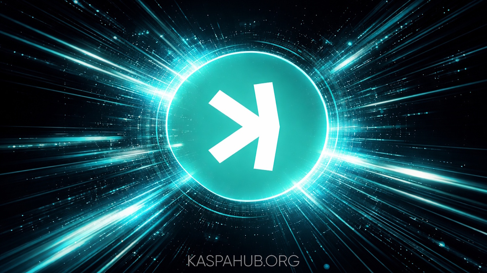

Kaspa’s Toccata Hard Fork: Expanding Programmability While Preserving a Lean, High-Throughput Base Layer
Kaspa has already demonstrated that Bitcoin’s core principles—proof-of-work security, decentralization, and a simple unspent transaction output model—can scale dramatically through its innovative blockDAG architecture. The upcoming Toccata hard fork, scheduled for mainnet activation in June, represents the next deliberate step in this evolution. This planned protocol upgrade introduces native programmability directly at the base layer, enabling more sophisticated uses without compromising the network’s speed, security, or predictability.
A hard fork in Kaspa’s context is a coordinated upgrade to the network’s rules. All nodes and miners must adopt the new software for the chain to continue seamlessly. Toccata follows a careful process of testing and validation to ensure stability, much like Bitcoin’s emphasis on reliable, battle-tested rules.
At its heart, Toccata solves a clear limitation. Kaspa’s blockDAG already allows blocks to be produced in parallel, delivering fast confirmations and high throughput while maintaining Bitcoin-level security guarantees through GHOSTDAG consensus. Yet the base layer previously offered limited tools for transactions that carry forward instructions or coordinate across multiple steps. Everyday payments worked exceptionally well, but developers, merchants, and institutions seeking conditional flows or verifiable asset tracking had fewer built-in options.
Toccata addresses this by adding two complementary forms of programmability, both grounded in the same efficient UTXO foundation. First, it introduces covenants—predefined spending conditions that let a transaction specify rules for how its outputs may be used later. Think of it as attaching a simple, enforceable instruction to a coin: “this amount can only move to a specific address once a condition is met.” A new compiler called Silverscript makes writing and deploying these rules straightforward and secure, supporting complex, stateful flows without bloating the ledger.
Second, Toccata lays the groundwork for based zero-knowledge applications. Zero-knowledge proofs allow one party to verify that a computation happened correctly without revealing the underlying data—ideal for privacy-preserving or trust-minimized interactions. New opcodes and verifiers, including support for flexible systems like Groth16 and RISC Zero, integrate directly with the blockDAG’s sequencing. Thanks to a partitioned sequencing design, the computational cost of these proofs scales with the activity of each individual application rather than taxing the entire network. This keeps everything lightweight and aligned with Kaspa’s parallel block production.
The upgrade also brings native assets—tokens with clear, on-chain lineage tracking—further enhancing usability for coordinated value transfer. All of this sits atop the existing proof-of-work security model. Honest miners continue to secure the network exactly as before, and the blockDAG’s parallel structure ensures that added capabilities do not create congestion or orphan blocks. Node operators will see a modest increase in storage—approximately 20–50 percent—but participation remains accessible, preserving the decentralized ethos Kaspa shares with Bitcoin.
What makes Toccata important is how it expands utility while respecting Kaspa’s foundational strengths. Merchants can implement conditional or staged payments enforced by the protocol itself. Developers gain direct access to Layer-1 scripting for peer-to-peer applications and a solid base for zero-knowledge tools. Enterprises benefit from verifiable asset flows and structured transaction logic. Everyday users interact with more capable applications without sacrificing the speed and low-cost confirmations that make Kaspa practical for real-world value transfer. Crucially, the base monetary layer stays lean and focused—programmability enhances rather than complicates the core ledger.
In short, Toccata marks a principled milestone. It builds directly on the scalable, secure foundation Kaspa established as an evolution of Bitcoin’s design, adding the ability for transactions to carry and enforce rules across steps. By integrating covenants and zero-knowledge infrastructure at the base layer—without sharding, layering, or sacrificing throughput—it opens the door to broader, more expressive uses while keeping the network simple, fast, and uncompromisingly secure.
As activation in June approaches, Toccata stands as a clear demonstration of thoughtful engineering: more capability, zero compromise on the properties that make decentralized digital money valuable in the first place. It positions Kaspa to support a wider range of economic activity on a single, robust ledger—true to its origins yet ready for the next phase of practical adoption.